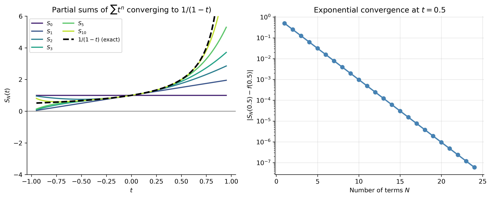
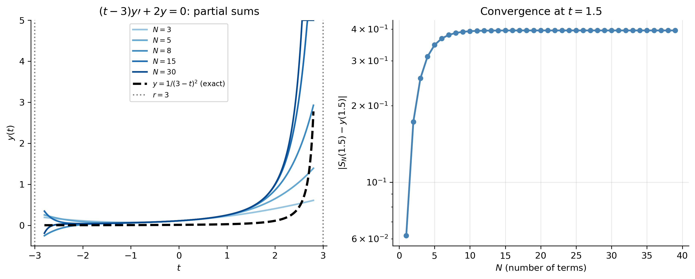

import numpy as npimport sympy as symimport matplotlib as mplimport matplotlib.pyplot as pltfrom scipy.integrate import solve_ivpfrom scipy.special import airyfrom math import factorialfrom IPython.display import Math, displaympl.rcParams['figure.dpi'] =150mpl.rcParams['axes.spines.top'] =Falsempl.rcParams['axes.spines.right'] =False
So far in this course we have solved ODEs whose solutions are composed of familiar functions — exponentials, sines, cosines, polynomials, and their combinations. But many important ODEs arising in physics and engineering have solutions that cannot be expressed in terms of these elementary functions at all. The method of power series provides a systematic way to find solutions to such equations, and in particular to linear ODEs with variable coefficients.
The idea is beautifully simple: assume the solution has the form of an infinite polynomial (a power series), substitute it into the ODE, and determine the coefficients term by term. The resulting solutions — convergent power series — define new functions whose properties can then be studied in depth. Some of the most important functions in mathematical physics (Bessel functions, Legendre polynomials, Airy functions) are defined in exactly this way.
This section follows Chapter 5 of Said-Houari, Differential Equations: Methods and Applications(Said-Houari 2015).
Part 1 — Review of Power Series
What Is a Power Series?
A power series centered at \(t_0\) is an infinite sum of the form \[
\sum_{n=0}^{\infty} a_n(t-t_0)^n = a_0 + a_1(t-t_0) + a_2(t-t_0)^2 + \cdots
\] where the coefficients\(a_n\) are constants. Taking \(t_0 = 0\) (centering at the origin) gives the simpler form \[
\sum_{n=0}^{\infty} a_n t^n = a_0 + a_1 t + a_2 t^2 + \cdots
\]
TipIntuition
Think of a power series as an “infinite polynomial.” Just as a finite polynomial \(p(t) = 3 + 2t - t^2\) is determined by its coefficients \((3, 2, -1)\), a power series is determined by its (infinite) sequence of coefficients \((a_0, a_1, a_2, \ldots)\). When the series converges, it defines a function.
A series may converge at some values of \(t\) and diverge at others.
ImportantTheorem: Radius of Convergence
For every power series \(\sum_{n=0}^{\infty} a_n(t-t_0)^n\) there exists a number \(r\) with \(0 \leq r \leq \infty\) — the radius of convergence — such that: - The series converges absolutely for \(|t-t_0| < r\). - The series diverges for \(|t-t_0| > r\). - At the endpoints \(|t-t_0|=r\) the behavior must be checked separately.
If \(r = \infty\) the series converges for all \(t\); if \(r = 0\) only at \(t_0\).
The radius of convergence can often be found by the ratio test: \[
r = \lim_{n\to\infty}\left|\frac{a_n}{a_{n+1}}\right|.
\]
Example. For \(\displaystyle\sum_{n=0}^{\infty}\frac{n+1}{3^n}t^n\): \[
r = \lim_{n\to\infty}\left|\frac{(n+1)/3^n}{(n+2)/3^{n+1}}\right| = \lim_{n\to\infty}\frac{3(n+1)}{n+2} = 3.
\]
The convergence of partial sums to the exact function is beautifully visible in the geometric series:
Show the code
t_plot = np.linspace(-0.95, 0.95, 400)f_exact =1/(1- t_plot)fig, axes = plt.subplots(1, 2, figsize=(11, 4.5))# Left: partial sumscolors = plt.cm.viridis(np.linspace(0.1, 0.9, 6))for N_ps, color inzip([0, 1, 2, 3, 5, 10], colors): S_N =sum(t_plot**n for n inrange(N_ps+1)) axes[0].plot(t_plot, S_N, color=color, lw=1.8, label=f'$S_{{{N_ps}}}$')axes[0].plot(t_plot, f_exact, 'k--', lw=2.5, label=r'$1/(1-t)$(exact)')axes[0].set_ylim(-4, 6); axes[0].axhline(0, color='k', lw=0.5)axes[0].set_xlabel('$t$'); axes[0].set_ylabel('$S_N(t)$')axes[0].set_title(r'Partial sums of $\sum t^n$ converging to $1/(1-t)$')axes[0].legend(fontsize=8.5, ncol=2)# Right: error vs N at t=0.5N_arr = np.arange(1, 25)errors = [abs(sum(0.5**n for n inrange(N+1)) -2.0) for N in N_arr]axes[1].semilogy(N_arr, errors, 'o-', color='steelblue', lw=2, markersize=6)axes[1].set_xlabel('Number of terms $N$')axes[1].set_ylabel('$|S_N(0.5) - f(0.5)|$')axes[1].set_title('Exponential convergence at $t=0.5$')axes[1].grid(True, alpha=0.3)plt.tight_layout()plt.show()

Figure 1: Partial sums \(S_N(t) = \sum_{n=0}^N t^n\) converging to \(f(t)=1/(1-t)\) (black dashed) for \(|t|<1\). Each successive partial sum adds one more term and fits the true function better. Outside \(|t|\geq 1\) the partial sums diverge — the radius of convergence \(r=1\) is sharp.
Analytic Functions
ImportantDefinition: Analytic at \(t_0\)
A function \(f(t)\) is analytic at \(t_0\) if it has a valid power series expansion \(f(t) = \sum_{n=0}^{\infty} a_n(t-t_0)^n\) in some neighborhood of \(t_0\), with \[a_n = \frac{f^{(n)}(t_0)}{n!}.\] This is the Taylor series of \(f\) at \(t_0\).
When is a function analytic? - Polynomials and \(e^t\) are analytic everywhere. - \(\sin t\), \(\cos t\), \(\ln(1+t)\), \((1+t)^p\) are analytic at \(t_0 = 0\). - Every rational function \(p(t)/q(t)\) is analytic wherever \(q(t) \neq 0\). - Sums, products, and quotients (when denominator \(\neq 0\)) of analytic functions are analytic.
Part 2 — Power Series Operations
Term-by-Term Differentiation
The most important property for our purposes:
ImportantTheorem: Term-by-Term Differentiation
If \(f(t) = \sum_{n=0}^{\infty} a_n(t-t_0)^n\) converges for \(|t-t_0|<r\), then \(f\) is differentiable and \[
f'(t) = \sum_{n=1}^{\infty} n\,a_n(t-t_0)^{n-1}, \qquad
f''(t) = \sum_{n=2}^{\infty} n(n-1)\,a_n(t-t_0)^{n-2},
\] both converging for \(|t-t_0|<r\). The radius of convergence is unchanged by differentiation.
This is what makes power series so useful for ODEs: we can differentiate term by term and then substitute directly into the equation.
If \(\displaystyle\sum_{n=0}^{\infty} a_n t^n = \sum_{n=0}^{\infty} b_n t^n\) for all \(t\) in some open interval, then \(a_n = b_n\) for all \(n \geq 0\).
This is the key theorem that lets us equate coefficients when we substitute a power series into an ODE. It says a power series representation is unique.
Re-indexing Summations
When working with ODEs, we frequently need to shift the summation index so that all series have the same power of \(t\). The rule is: \[
\sum_{n=0}^{\infty} a_{n+k}\,t^{n+k} = \sum_{m=k}^{\infty} a_m\,t^m
\quad\text{(substitute } m = n+k\text{)}.
\]
Example. To combine \(\displaystyle\sum_{n=2}^{\infty} n(n-1)a_n t^{n-2}\) and \(\displaystyle\sum_{n=0}^{\infty} a_n t^n\) into a single series in \(t^n\), re-index the first:
Let \(m = n-2\) (equivalently \(n = m+2\)): \[
\sum_{n=2}^{\infty} n(n-1)a_n t^{n-2} = \sum_{m=0}^{\infty}(m+2)(m+1)a_{m+2}\,t^m.
\] Both series now run from \(m=0\) and have the same power \(t^m\), so we can add them and apply the Identity Principle to each coefficient of \(t^m\).
Part 3 — Series Solutions of First-Order ODEs
The Strategy
Given a first-order linear ODE, we: 1. Assume a power series solution \(y(t) = \sum_{n=0}^{\infty} a_n t^n\). 2. Differentiate term by term. 3. Substitute into the ODE. 4. Re-index all series to the same power of \(t\). 5. Collect terms and apply the Identity Principle to get a recurrence relation for the coefficients \(a_n\). 6. Solve the recurrence to find all \(a_n\) in terms of \(a_0\) (and \(a_1\) if second order). 7. Write the series solution and determine its radius of convergence.
Example 1 — \(y' - y = 0\)
The simplest non-trivial example: the equation whose solution is \(e^t\).
Assume\(y = \sum_{n=0}^{\infty} a_n t^n\), so \(y' = \sum_{n=1}^{\infty} n a_n t^{n-1}\).
The series converges for all \(t\) (radius \(r = \infty\)), as expected for \(e^t\).
Example 2 — \((t-3)y' + 2y = 0\)
Standard form:\(y' + \dfrac{2}{t-3}y = 0\). The coefficient \(2/(t-3)\) is analytic for \(t\neq 3\), so we expand about \(t_0=0\) with radius of convergence \(r=3\) (the distance from \(t_0=0\) to the nearest singular point \(t=3\)).
The radius of convergence is \(r=3\). Differentiating \(\frac{1}{(3-t)^2}\) shows this series equals \(\dfrac{a_0/9}{(1-t/3)^2} = \dfrac{a_0}{(3-t)^2}\), which is indeed the exact solution.
Show the code
N_terms_list = [3, 5, 8, 15, 30]t_plot = np.linspace(-2.8, 2.8, 500)y_exact =1/(3- t_plot)**2/9# a0=1/9 so y=1/(3-t)^2fig, axes = plt.subplots(1, 2, figsize=(11, 4.5))colors = plt.cm.Blues(np.linspace(0.4, 0.9, len(N_terms_list)))for N_ps, color inzip(N_terms_list, colors): coeffs = [(n+1)/3**n /9for n inrange(N_ps)] # a_n = (n+1)/3^n * a0, a0=1/9 y_ps =sum(coeffs[n]*t_plot**n for n inrange(N_ps)) axes[0].plot(t_plot, np.clip(y_ps, -1, 5), color=color, lw=1.8, label=f'$N={N_ps}$')axes[0].plot(t_plot, y_exact, 'k--', lw=2.5, label=r'$y=1/(3-t)^2$(exact)')axes[0].axvline(3, color='gray', ls=':', lw=1.5, label='$r=3$')axes[0].axvline(-3, color='gray', ls=':', lw=1.5)axes[0].set_ylim(-0.5, 5); axes[0].set_xlabel('$t$'); axes[0].set_ylabel('$y(t)$')axes[0].set_title(r'$(t-3)y\prime+2y=0$: partial sums')axes[0].legend(fontsize=8)# Error at t=1.5t_val =1.5y_true =1/(3-t_val)**2/9N_arr = np.arange(1, 40)errors = []for N_ps in N_arr: y_ps_val =sum((n+1)/3**n/9* t_val**n for n inrange(N_ps)) errors.append(abs(y_ps_val - y_true))axes[1].semilogy(N_arr, errors, 'o-', color='steelblue', lw=2, markersize=5)axes[1].set_xlabel('$N$ (number of terms)')axes[1].set_ylabel(r'$|S_N(1.5) - y(1.5)|$')axes[1].set_title('Convergence at $t=1.5$')axes[1].grid(True, alpha=0.3)plt.tight_layout()plt.show()

Figure 2: Series solution of \((t-3)y'+2y=0\), \(y(0)=1/9\). Left: partial sums converging to the exact solution \(y=1/(3-t)^2\) (black dashed) for \(|t|<3\). The series diverges outside the radius of convergence \(r=3\) (dashed vertical lines). Right: partial-sum errors at \(t=1.5\) decreasing toward zero, demonstrating convergence.
Part 4 — Series Solutions of Second-Order ODEs
Ordinary and Singular Points
For the second-order equation in standard form: \[
y'' + P(t)\,y' + Q(t)\,y = 0,
\]
ImportantDefinition: Ordinary and Singular Points
\(t_0\) is an ordinary point if both \(P(t)\) and \(Q(t)\) are analytic at \(t_0\).
\(t_0\) is a singular point if \(P(t)\) or \(Q(t)\) fails to be analytic there.
Examples:
Equation
\(P(t)\)
\(Q(t)\)
Ordinary points
Singular points
\(y'' + y = 0\)
\(0\)
\(1\)
All \(t\)
None
\(y'' - ty = 0\) (Airy)
\(0\)
\(-t\)
All \(t\)
None
\((1-t^2)y''-2ty'+\lambda y=0\) (Legendre)
\(\frac{-2t}{1-t^2}\)
\(\frac{\lambda}{1-t^2}\)
\(t\neq\pm 1\)
\(t=\pm 1\)
ImportantTheorem (Existence near ordinary points)
If \(t_0\) is an ordinary point of \(y''+P(t)y'+Q(t)y=0\), and if \(P\), \(Q\) have power series expansions valid for \(|t-t_0|<r\), then the ODE has two linearly independent analytic solutions \(y_1\), \(y_2\) with power series valid for \(|t-t_0|<r\). The general solution is \(y=C_1 y_1 + C_2 y_2\).
This theorem guarantees that our method will work and gives us the radius of convergence in advance.
Example 3 — \(y'' + y = 0\) (Recovering \(\cos t\) and \(\sin t\))
This is Example 5.8 of Said-Houari — the series method applied to an equation whose solutions we already know, serving as a verification.
Figure 3: Power series partial sums recovering \(\cos t\) (left) and \(\sin t\) (right). Even-indexed terms build \(\cos t\); odd-indexed terms build \(\sin t\). More terms are needed to capture the oscillations accurately over a larger interval.
Example 4 — The Airy Equation: \(y'' - ty = 0\)
The Airy equation arises in quantum mechanics (near classical turning points), optics (diffraction theory), and fluid dynamics (stability of flows). Its solutions cannot be expressed in terms of elementary functions.
Assume\(y = \sum_{n=0}^{\infty}a_n t^n\).
Compute\(y'' = \sum_{n=0}^{\infty}(n+2)(n+1)a_{n+2}t^n\) and \(ty = \sum_{n=1}^{\infty}a_{n-1}t^n\).
Identity Principle gives \(a_2 = 0\) and for \(n \geq 1\): \[
a_{n+2} = \frac{a_{n-1}}{(n+2)(n+1)}.
\]
This three-term recurrence (\(a_{n+2}\) depends on \(a_{n-1}\), not \(a_n\)) means the coefficients split into three families based on their index mod 3:
\(n \equiv 0 \pmod{3}\): depends on \(a_0\)
\(n \equiv 1 \pmod{3}\): depends on \(a_1\)
\(n \equiv 2 \pmod{3}\): all zero (since \(a_2 = 0\))
Computing the non-zero terms for each independent initial condition:
\[y_2(t) = t + \frac{t^4}{12} + \frac{t^7}{504} + \cdots = t + \sum_{k=1}^{\infty}\frac{2\cdot 5\cdot 8\cdots(3k-1)}{(3k+1)!}t^{3kC+1}.\]
Both series converge for all\(t\) (radius \(r=\infty\)), verified by the ratio test. The general solution \(y = C_1 y_1 + C_2 y_2\) defines the Airy functions\(\text{Ai}(t)\) and \(\text{Bi}(t)\) up to linear combinations.
Figure 4: Airy equation \(y''-ty=0\): the two linearly independent series solutions \(y_1(t)\) (blue) and \(y_2(t)\) (orange) satisfying \(y_1(0)=1\), \(y_1'(0)=0\) and \(y_2(0)=0\), \(y_2'(0)=1\). For \(t<0\) both solutions oscillate (the ODE has no dissipation and the coefficient \(-t>0\)); for \(t>0\) they grow or decay. Red dots confirm the series against a direct numerical ODE solve.
NoteThe Airy Functions
The Airy functions \(\text{Ai}(t)\) and \(\text{Bi}(t)\) are specific linear combinations of \(y_1\) and \(y_2\) normalized to have standard asymptotics as \(t\to+\infty\). For \(t<0\) they oscillate; for \(t>0\), \(\text{Ai}(t)\to 0\) (decay) while \(\text{Bi}(t)\to+\infty\) (growth). They appear in the Schrödinger equation near potential barriers, the theory of caustics in optics, and uniform asymptotic expansions in applied mathematics.
Example 5 — Legendre’s Equation
Legendre’s equation\[
(1-t^2)y'' - 2ty' + p(p+1)y = 0
\] arises in potential theory, electrostatics, and quantum mechanics whenever a problem is formulated in spherical coordinates. Here \(p\) is a real parameter.
Standard form (\(t_0 = 0\) is an ordinary point): \[
y'' - \frac{2t}{1-t^2}y' + \frac{p(p+1)}{1-t^2}y = 0.
\]
The nearest singular points are \(t = \pm 1\), so the series about \(t_0 = 0\) has radius of convergence \(r = 1\).
The series method (Exercise 5.1 of Said-Houari) gives the recurrence: \[
a_{n+2} = -\frac{(p-n)(p+n+1)}{(n+2)(n+1)}\,a_n, \quad n \geq 0.
\]
The general solution is \(y = a_0 y_{\rm even}(t) + a_1 y_{\rm odd}(t)\) where \(y_{\rm even}\) contains only even powers of \(t\) (determined by \(a_0\)) and \(y_{\rm odd}\) only odd powers (determined by \(a_1\)).
The key observation: if \(p = N\) is a non-negative integer, then \(a_{N+2} = 0\) (since the numerator \((p-n) = (N-N) = 0\) when \(n=N\)), so the series terminates — it becomes a polynomial! These polynomial solutions, properly normalized so that \(y(1) = 1\), are the Legendre polynomials\(P_N(t)\).
Figure 5: Left: power series partial sums for \(y_1\) (even) and \(y_2\) (odd) solutions of Legendre’s equation with \(p=2.5\) (non-integer — infinite series, \(r=1\)). Right: Legendre polynomials \(P_0,\ldots,P_4\) obtained when \(p\) is an integer — the series terminates and gives a polynomial. The recurrence coefficient \((p-n)=0\) at \(n=p\) causes early termination.
TipWhy Do the Series Terminate for Integer \(p\)?
The recurrence \(a_{n+2} = -\dfrac{(p-n)(p+n+1)}{(n+2)(n+1)}a_n\) contains the factor \((p-n)\) in the numerator. When \(p = N\) is a non-negative integer and \(n = N\), this factor equals zero, making \(a_{N+2} = 0\). Since all subsequent coefficients are determined by \(a_{N+2}\), the entire series truncates. The result is a polynomial of degree \(N\) — the \(N\)th Legendre polynomial \(P_N(t)\). These polynomials are orthogonal on \([-1,1]\), which is why they arise so naturally in Fourier-type expansions in spherical geometry.
Using SymPy: The Series Method in Practice
SymPy can find series solutions automatically using dsolve (for known equations) or by working with the recurrence relation manually.
Show the code
t_sym = sym.Symbol('t')y_sym = sym.Function('y')print("SymPy series solutions to key equations:\n")# y'' + y = 0ode1 = sym.Eq(y_sym(t_sym).diff(t_sym, 2) + y_sym(t_sym), 0)sol1 = sym.dsolve(ode1, y_sym(t_sym))print("y''+y=0:")display(Math(sym.latex(sol1)))print()# y' - y = 0ode2 = sym.Eq(y_sym(t_sym).diff(t_sym) - y_sym(t_sym), 0)sol2 = sym.dsolve(ode2, y_sym(t_sym))print("y'-y=0:")display(Math(sym.latex(sol2)))print()# First few terms of Airy series via Taylor expansiont_s = sym.Symbol('t')y_s = sym.Function('y')# For Airy, use explicit series representation via sympy.functionsairy_sym = sym.airyai(t_s)airy_series = sym.series(airy_sym, t_s, 0, 10)print("Ai(t) Taylor series about t=0:")display(Math(sym.latex(airy_series)))
The series method is not just a technique for specific equations — it is the foundation of the entire theory of special functions. Bessel functions (vibrating membranes, waveguides), Legendre polynomials (electrostatics, quantum mechanics), Hermite polynomials (quantum harmonic oscillator), Laguerre polynomials (hydrogen atom wavefunctions), and Airy functions (optics, quantum tunnelling) are all defined as series solutions to ODEs that have no elementary-function solutions. Every one of them emerges from the same three-step process: assume a series, derive a recurrence, identify the pattern.
Relevant Videos
Intro to Series Solutions of ODEs
When the Can We Use the Series Method?
Airy’s Equation Example
References
Said-Houari, Belkacem. 2015. Differential Equations: Methods and Applications. Springer.
TipExpand for Session Info
Show the code
import sysprint("Python version:", sys.version)print('\n'.join(f'{m.__name__}=={m.__version__}'for m inglobals().values() ifgetattr(m, '__version__', None)))